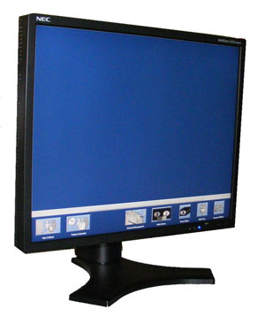
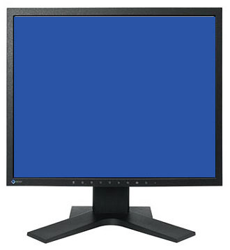

Operating Documentation
Direction 5193574-800, Rev# 22
LightSpeed 7.X Service Methods
Module Version 2.0, Version Date 2/27/12
Operating Documentation |
| Required Persons | Preliminary Reqs | Procedure | Finalization |
|---|---|---|---|
| 1 | 30 mins |
This procedure describes and illustrates the steps necessary to replace either NEC or EIZO LCD Display Monitors located with the GOC 6 Operator Console.
Illustration 1: NEC 1990 SXi LCD Monitor

Illustration 2: EIZO S1921-X LCD Monitor

| Last revised: | 27 October 2011 |
| Item | Qty | Effectivity | Part# | Manufacturer | |
|---|---|---|---|---|---|
| Standard FE Toolkit | 1 | - | - | - | |
| Item | Qty | Effectivity | Part# | Manufacturer | |
|---|---|---|---|---|---|
| NEC 1990 SXi LCD Monitor (19 inch, Black) or | 1 | - | 5169069-2 | - | |
| EIZO S1921-X LCD Monitor (19 inch, Black) | 1 | - | 5169069-3 | - | |
| ||||
| FOLLOW ALL REQUIRED SAFETY AND PPE PROCEDURES CUSTOMARY FOR YOUR ORGANIZATION WHEN WORKING ON THIS PRODUCT. | ||||
| Condition | Reference | Effectivity |
|---|---|---|
Access to the Operator Console Tabletop is required. Make sure adequate space is available on the console. | - | - |
Only trained service personnel should service the GE CT Scanner. | - | - |
Consideration should be given to the age of the LCD Monitor being replaced. If LCD Monitor is several years old, the back lighting of the display will have degraded. Replacing one LCD Monitor may result in unequal display quality when comparing the newly installed replacement LCD Monitor to that of the other display. Consider replacing both LCD Monitors if these conditions apply. Also Note: If a NEC 1990 SXi monitor is being replaced with a EIZO S1921-X due to unavailability of the older NEC LCD Monitor, consider replacing both NEC LCD Monitors to maintain equal display quality. | - | - |
Select one of the following methods to power off the Operator Console:
If applications are running, click the Shut Down icon and select Shut Down.
If applications are down, open a Unix Shell using the Toolchest. Type: {ctuser@hostname} halt . Press <Enter>.
The Operator Console monitor will display a ‘System Halted’ message when it is acceptable to power off the Operator Console.
Power OFF the Operator Console at the front panel switch. (See Illustration 3.)
Illustration 3: Console Power Switch

Disconnect the Power Cord and Video Cable from the LCD Monitor being replaced.
Remove the LCD Monitor and set aside.
Place the replacement LCD monitor on the Operator Console.
Plug in Video Cable in the SVGA connector on the LCD Monitor and secure the two (2) retaining screws.
Reconnect the Power Cord to the LCD Monitor
Illustration 4: NEC 1990 SXi LCD Display Monitor Connections

Table 1: LCD Display Monitor Connections
| A | Power Cable Connection |
| B | SVGA Video Connection |
Illustration 5: EIZO S1921-X LCD Display Monitor Connections

Power ON the Operator Console at the console front panel switch.
Make sure the Power Switch on the Monitor is turned on. (NEC - Front and Side panels of the LCD Monitor, EIZO - Front panel of LCD Monitor)
Visually verify that the LCD Monitor powers up and receives a video signal.
| NOTE: | The NEC LCD Monitor Power LED will illuminate Green if
both power and video are present. If the video signal is missing,
the LCD Monitor Power LED will illuminate Yellow. The EIZO LCD Monitor Power LED will illuminate Blue if both power and video are present. If the video signal is missing or the monitor is in power save mode, the LCD Monitor Power LED will illuminate Orange. |
In order to assure proper operation of the LCD Monitor it is necessary to perform LCD Video Monitor Setup.
Return to this procedure when finished.
After completing the LCD Monitor Setup Procedure, perform a complete shutdown of the Operator Console and restart the system.